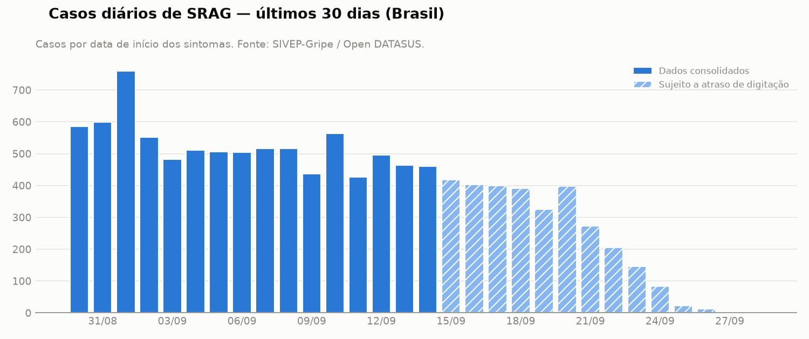
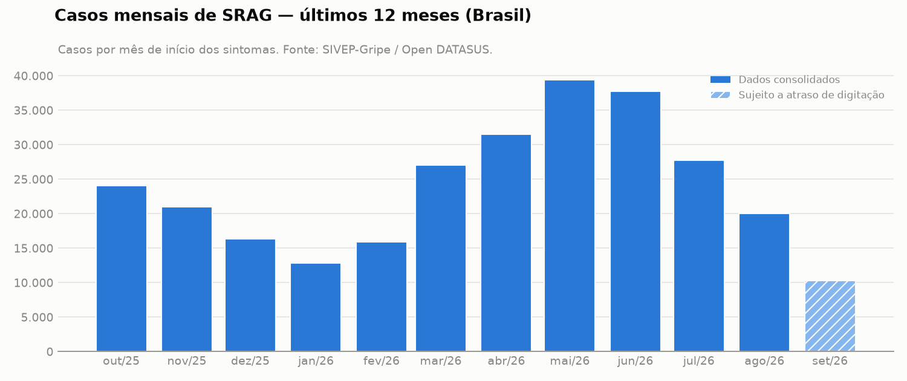

O cenário nacional de Síndrome Respiratória Aguda Grave apresenta arrefecimento nos registros recentes após o pico sazonal ocorrido no primeiro semestre de 2026. A taxa de aumento de casos situou-se em -12,2%, refletindo a tendência de queda observada nos últimos meses completos. No entanto, a vigilância epidemiológica permanece atenta devido à circulação contínua de vírus respiratórios e à necessidade de monitorar grupos específicos, como crianças e gestantes. A letalidade hospitalar e a ocupação de leitos de terapia intensiva exigem acompanhamento contínuo pelas equipes de gestão.
| Métrica | Valor | Numerador / denominador | Período (início dos sintomas) |
|---|---|---|---|
| Taxa de aumento de casos | -12,2% | 3.366 / 3.833 | 08/09/2026 a 14/09/2026 |
| Taxa de mortalidade (letalidade hospitalar) | 5,2% | 2.929 / 56.249 | 17/06/2026 a 14/09/2026 |
| Taxa de ocupação de UTI (proxy) | 28,3% | 4.284 / 15.138 | 16/08/2026 a 14/09/2026 |
| Taxa de vacinação (COVID-19) entre casos de SRAG | 39,2% | 6.694 / 17.070 | 16/08/2026 a 14/09/2026 |
As métricas usam dados até 14/09/2026: os 14 dias mais recentes da base ainda estão sendo digitados no SIVEP-Gripe e foram excluídos para não confundir atraso de notificação com queda de casos.
A taxa de aumento de casos atingiu -12,2%, indicando uma variação negativa no número de novas notificações de SRAG na semana mais recente em comparação ao período imediatamente anterior. Esse comportamento sugere recuo nos atendimentos por quadros respiratórios graves, embora os dados recentes estejam sujeitos a revisões por atraso de digitação.
Como é calculada: Variação percentual dos casos de SRAG (por data de início dos sintomas) nos últimos 7 dias completos em relação aos 7 dias anteriores. Numerador = casos da semana atual; denominador = semana anterior.
Limitações:
A taxa de mortalidade (letalidade hospitalar) registrou 5,2% entre os casos com desfecho conhecido no período analisado. O índice mede exclusivamente a proporção de óbitos entre os pacientes hospitalizados por SRAG que tiveram desfecho encerrado, desconsiderando uma parcela de notificações que ainda aguarda fechamento.
Como é calculada: Óbitos por SRAG divididos pelos casos com desfecho conhecido (cura, óbito por SRAG ou óbito por outras causas), entre casos com sintomas nos últimos 90 dias completos.
Limitações:
A taxa de ocupação de UTI alcançou 28,3%, servindo como uma proxy para mensurar a proporção de internações hospitalares por SRAG que necessitaram de suporte intensivo. Como o sistema não consolida a capacidade total de leitos, o indicador reflete o peso relativo dos casos graves sobre a rede hospitalar.
Como é calculada: Proporção dos casos de SRAG hospitalizados que foram internados em UTI, entre casos com sintomas nos últimos 30 dias completos e com a informação de UTI preenchida.
Limitações:
A taxa de vacinação contra a COVID-19 entre os casos de SRAG foi de 39,2%, medindo o histórico de imunização exclusivamente na população que desenvolveu a forma grave da doença. Esse dado não reflete a cobertura vacinal da população geral e deve ser interpretado no contexto da proteção parcial observada nos pacientes hospitalizados.
Como é calculada: Proporção dos casos de SRAG que receberam ao menos uma dose de vacina contra COVID-19, entre casos com sintomas nos últimos 30 dias completos e com a informação preenchida.
Limitações:


A análise da série histórica mensal demonstra que os registros iniciaram o ano de 2026 em patamares moderados, com 12.817 casos em janeiro de 2026, avançaram progressivamente até atingir o pico de 39.435 casos em maio de 2026, e iniciaram uma trajetória decrescente nos meses seguintes, marcada por 20.021 casos em agosto de 2026 e um total parcial de 10.277 casos em setembro de 2026 (mês incompleto). Na série diária, os registros oscilaram em torno de quinhentos casos diários no início de setembro de 2026, com reduções subsequentes que refletem o atraso natural no preenchimento e notificação dos dias mais próximos à data de corte.
As notícias recentes indicam variações regionais na circulação de patógenos, como o aumento de metapneumovírus no Espírito Santo (id 1) e de SRAG em crianças no Rio de Janeiro e Sergipe (id 3). Além disso, há registros de casos e óbitos por influenza em municípios como Campinas (id 6 e id 7) e preocupações expressas sobre a baixa adesão vacinal entre gestantes (id 5, id 8 e id 9), o que reforça a importância das campanhas de imunização.
Notícias consultadas:
✱ notícia usada na análise.
gemini / gemini-3.8-flash (orquestração das tools e redação da análise).logs/audit/20261002T021541Z-1c9bec0b.jsonl.Relatório gerado automaticamente por um agente de IA Generativa a partir de dados públicos do SIVEP-Gripe (Open DATASUS) e de notícias. Os números foram calculados de forma determinística; os textos interpretativos foram produzidos por um LLM e validados por regras automáticas. Use como apoio à vigilância, não como orientação clínica individual.